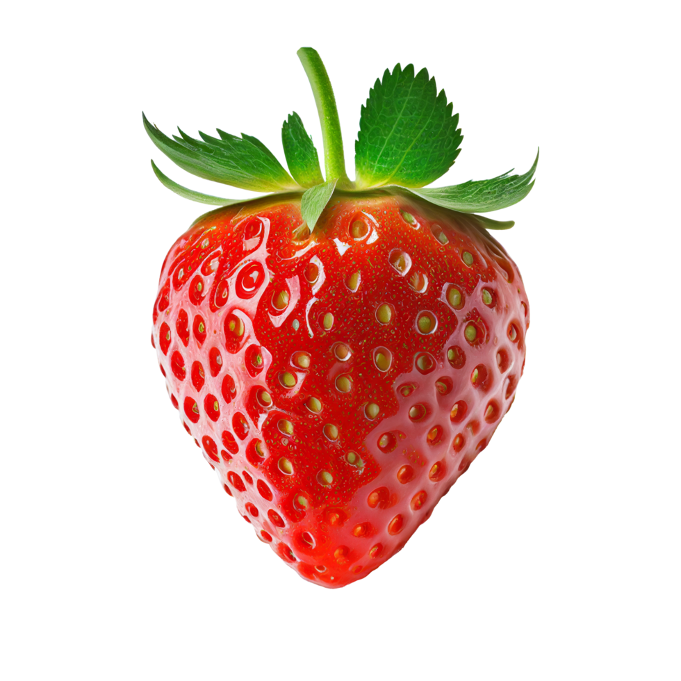

Font Awesome es una biblioteca popular de iconos que permite agregar iconos con clases CSS.
Material Icons sigue las directrices de Material Design, ideales para aplicaciones con esta estética.
home email camera_altBootstrap también tiene su colección de iconos que puedes usar con elementos SVG.
SVG (Scalable Vector Graphics) es ideal para iconos escalables de alta calidad que se integran fácilmente en HTML y CSS.
Los iconos en formato de imagen como PNG pueden usarse, pero tienen menos flexibilidad en tamaño y color.
